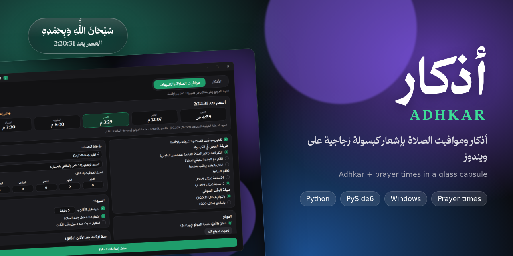

أذكارك ومواقيت صلاتك،
بهدوء على سطح مكتبك
تطبيق ويندوز خفيف يجلس في شريط النظام، ويعرض لك ذكرًا قصيرًا من الكتاب والسنة في كبسولة زجاجية لا تسحب التركيز، مع عدّاد الصلاة القادمة وتنبيهات الأذان والإقامة — كل ذلك يُحسب على جهازك.
مجاني ومفتوح المصدر (MIT) · يعمل دون حساب · الإصدار 1

مصمم للذكر دون إزعاج
كل ميزة أدناه موجودة فعلًا في التطبيق وتم التحقق منها في الكود.
كبسولة عائمة زجاجية
إشعار دائري شفاف ينزل من أعلى الشاشة ثم يختفي، ولا يسرق تركيزك أبدًا.
ثلاثة أوضاع للعرض
ذكر فقط مع الظهور عند التمرير، أو الذكر مع العدّاد تحته، أو جنبًا إلى جنب.
مواقيت الصلاة دون إنترنت
حساب محلي من إحداثياتك بسبع طرق حساب وخيار عصر حنفي وتعديل لكل صلاة.
تنبيه وإقامة
إشعار قبل الأذان وعنده، ثم عدّاد إقامة مستقل لكل صلاة دون تكرار.
تحكم كامل بالتوقيت
فاصل بين الأذكار من دقيقة إلى يوم كامل، ومدة بقاء من ثانيتين إلى دقيقتين.
أذكارك الخاصة
أضف واحذف واستورد من ملف نصي أو بالسحب والإفلات، مع تجاهل المكرر.
تخصيص المظهر
حجم خط مستقل للواجهة والإشعار، وإغلاق بالنقر أو تمرير النقرات للخلف.
موقع تلقائي أو يدوي
اكتشاف عبر خدمة موقع ويندوز مع عرض الدقة، أو بحث عن مدينتك وإحداثيات دقيقة.
يعمل في الخلفية
يستقر في شريط النظام مع عرض الصلاة القادمة، وخيار التشغيل مع بدء ويندوز.
كيف يعمل؟
ثلاث خطوات فقط، دون حسابات أو تعقيد.
حمّل وثبّت على ويندوز
اختر النسخة المحمولة أو المثبّت من قسم التحميل وشغّلها.
اضبط موقعك وتفضيلاتك
حدد مدينتك أو إحداثياتك، واختر طريقة الحساب وأوقات الظهور.
استمتع بالذكر والمواقيت
تابع الأذكار والعدّاد التنازلي للصلاة القادمة حسب إعداداتك.
معاينة التطبيق
لقطات حقيقية من التطبيق أثناء العمل. انقر أي صورة لعرضها بحجم أكبر.
شاهد التطبيق يعمل
تسجيل حقيقي للكبسولة على سطح مكتب ويندوز.
حمّل أذكار لويندوز
اختر النسخة المناسبة لك. الملفان غير موقّعين رقميًا، فقد يعرض ويندوز تحذير SmartScreen — حمّل دائمًا من المصدر الرسمي فقط.
عند ظهور تحذير SmartScreen لا تتجاوزه إلا إذا حمّلت الملف من المصدر الرسمي وتأكدت من سلامته.
الأسئلة الشائعة
إجابات عن المؤكد فقط — ما لم نتأكد منه تركْناه قابلًا للتعديل.